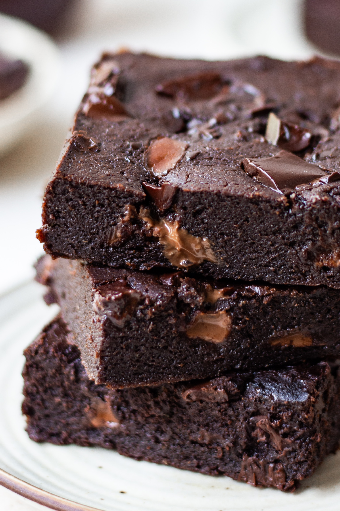

Brownie Recepies

A chocolate brownie, or simply a brownie, is a chocolate baked confection. Brownies come in a variety of forms and may be either fudgy or cakey, depending on their density. Brownies often, but not always, have a glossy "skin" on their upper crust.
ingredients
- 2 eggs + water – Michelle uses a bit of water with the eggs to achieve the moist, gooey texture of boxed mix brownies without any commercial emulsifiers. And because this recipe doesn’t contain any baking powder, eggs are essential for helping the brownies puff up in the oven.
- Powdered sugar – The trick to making homemade brownies that are just like ones from a box! Powdered sugar contains cornstarch, which helps thicken the batter without the chemical additives you’d find in a mix.
- Unsweetened cocoa powder – Michelle recommends using Hershey’s Special Dark Dutch-processed cocoa powder (I used Whole Foods’ 365 Cocoa Powder). Make sure to sift it if it’s lumpy!
- Oil – While many recipes for brownies use unsalted butter, Michelle’s calls for canola oil, just like the boxed mix. I use olive oil because it’s what I keep on hand, and I love the rich flavor.
- Vanilla Extract – 1/2 teaspoon vanilla really amps up the chocolate flavor.
steps to
First, mix together the dry and wet ingredients in two separate bowls. Combine the sugar, flour, powdered sugar, cocoa powder, chocolate chips, and salt in a medium bowl. Then, whisk together the eggs, olive oil, and water in a large one
Next, combine the wet and dry ingredients. Sprinkle the dry mixture over the wet one, and fold until just combined. The batter will be thick!
Then, pour the batter into an 8×8 inch baking pan lined with parchment paper. Use a rubber spatula to spread it to all four sides of the pan and to smooth the top. The mixture will be very thick – that’s ok.
Finally, bake! Transfer the pan to a 325-degree oven and bake for 40 to 45 minutes, until a toothpick inserted comes out with a few crumbs attached. Allow the brownies to cool completely before slicing and serving. Enjoy!
Store any leftovers in an airtight container at room temperature for up to 3 days. They also freeze well for up to a month. Last time I made these, I doubled the recipe and stored the second batch in the freezer. It was so fun to have them on hand for a quick and easy dessert or afternoon treat!